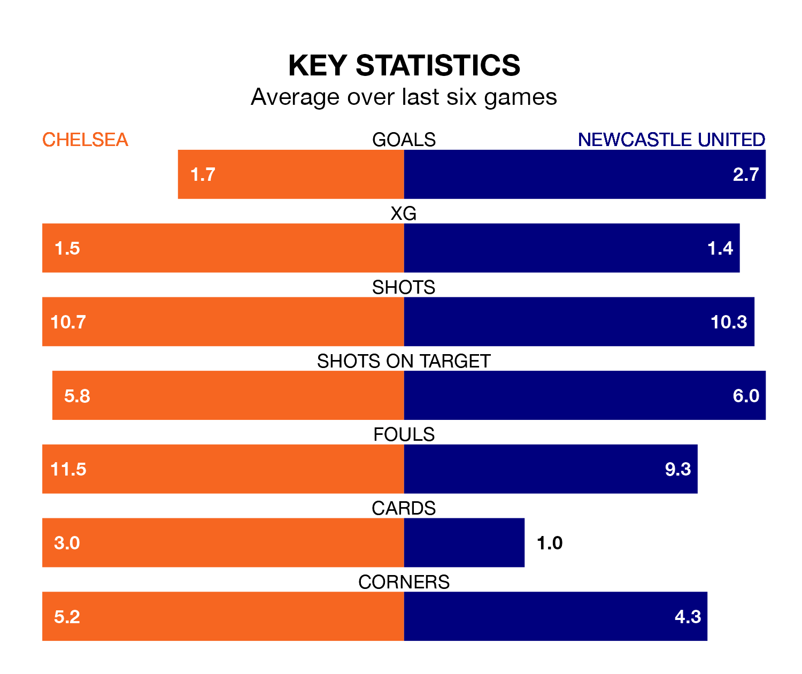

Newcastle United travel to Chelsea on late Monday in the Premier League.
The visitors come into the game on the back of a win in their last match, having beaten Wolverhampton Wanderers 3-0 at home, with goals from Alexander Isak, Anthony Gordon and Valentino Livramento.
The Blues, meanwhile, drew their last match, 2-2 against Brentford, with their goals scored by Axel Disasi and Nicolas Jackson.
With 57 goals in 27 games so far this season, Newcastle are scoring more than average in the league with 2.1 goals per game. But they are conceding more than average too, letting in 45 goals at a rate of 1.7 per game.
Chelsea are also above average scorers, with 1.7 goals per game, compared to a league average of 1.6. They have also conceded 1.7 goals per game.
In the last 10 years, Chelsea and Newcastle have played each other on 20 occasions. Chelsea won 11 of them, Newcastle five, and they drew four times.
On average, the Blues scored 1.6 goals and the Magpies 1.0 in those matches.
Their last meeting was on December 19, when they played out a 1-1 draw.
United's Kieran Trippier is the league's most creative player, racking up 10 assists in 25 appearances so far this season.
For the Blues, Malo Gusto has set up the most goals, having laid on five assists in 19 games.
The Magpies are eighth in the table after 27 games, of which they have won 12 and drawn four, earning 40 points.
The home team are three places behind the visitors in 11th, with 10 wins and six draws putting them on 36 points.
Chelsea are in mixed form in the Premier League, with two wins and two draws from their last six games.
With three wins and two draws over that period, Newcastle's form is better – they have taken 11 points from 18, compared to Chelsea's eight.
Monday's match will be refereed by John Brooks, who has taken charge of 16 Premier League games so far this season, issuing four red cards and booking 72 players. He has awarded four penalties.
The last Chelsea game Brooks refereed was a 3-1 away loss to West Ham United on August 20. His last Newcastle match was their 3-1 win away at Aston Villa on January 30.
Updated: 09:34 (UTC), 08/03/24